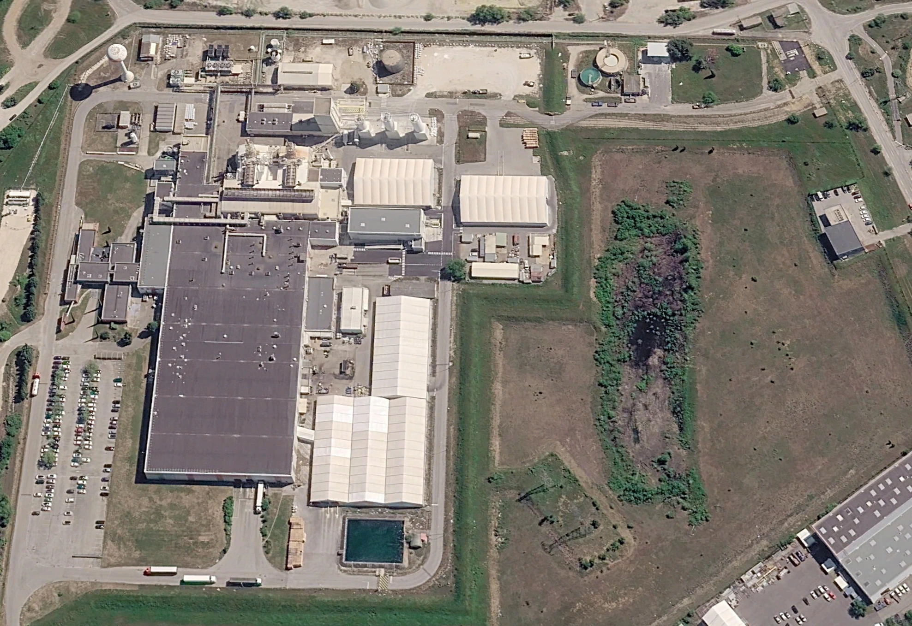

Ouvrir OCC ÉnergieVue rectangulaire du site
Google Earth Pro — images Airbus du 16 avril 2026. Export original de 8 192 × 3 748 pixels, conservé intégralement. Image utilisateur intégrée de 1 976 × 1 358 pixels, avec les quatre bords conservés ; détails natifs chargés au zoom, sans agrandissement supplémentaire ni génération d’image.

Google Earth Pro · Airbus · 16/04/2026 — cliquer pour l’export original 8K.Dans l’application : le zoom arrière affiche l’image entière sans découper ses bords. Le bouton ⛶ ouvre le plein écran ; Échap permet d’en sortir. Déplacement par glissement ou flèches ; + et − pour zoomer ; 0 pour revenir au cadrage initial. Le bouton 1:1 affiche le détail natif.
Les bâtiments conservent leurs fiches et références. Leur recalage sur la nouvelle image est indicatif, établi sur neuf repères visuels. Il ne constitue pas un relevé géométrique certifié.
Provenance et paramètres du recalage